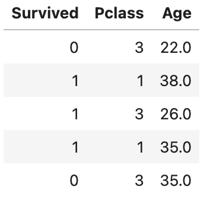
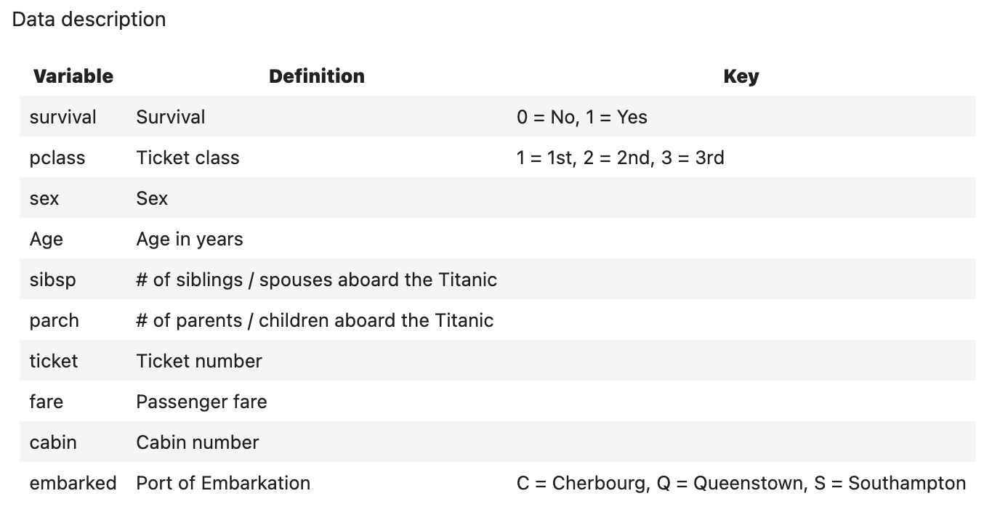
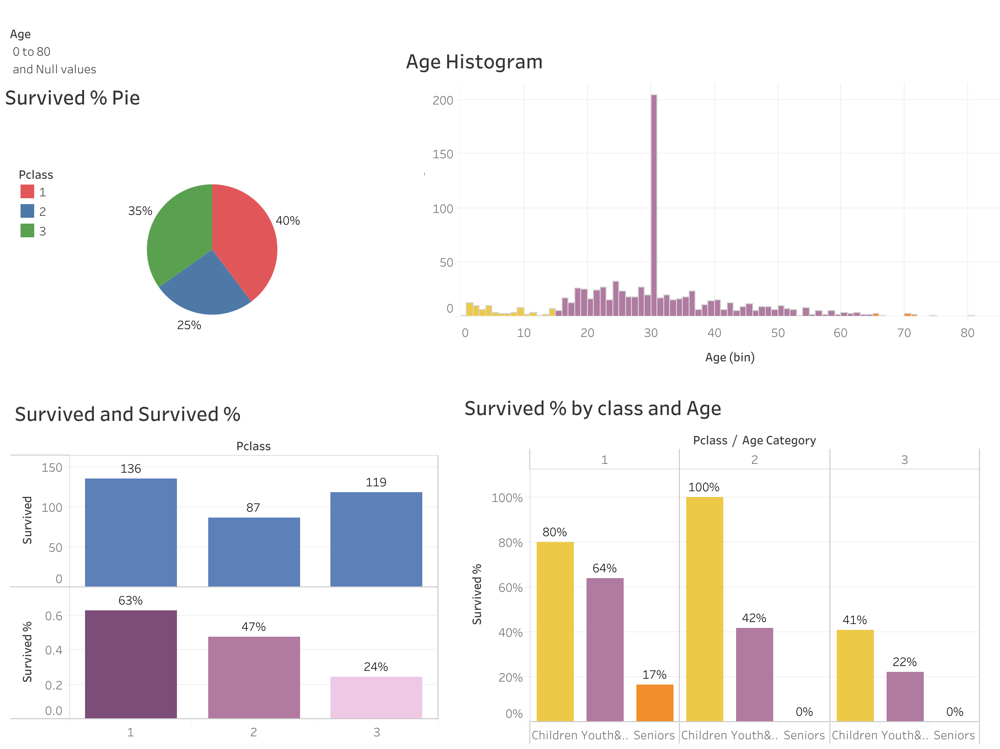

Interactive Tableau Dashboard

Data Visualization Project
This project analyzes the Titanic dataset to understand whether survival rate was influenced by passenger class. The goal was to identify inequalities in survival chances and assess how age affected survival within each class. The analysis was performed using Python (Jupyter Notebook) and visualized using a Tableau dashboard to clearly highlight survival patterns among different passenger groups.
Survival rate of First-Class passengers
Higher survival rate in First-Class compared to Third-Class
Survival rate of Second-Class children


